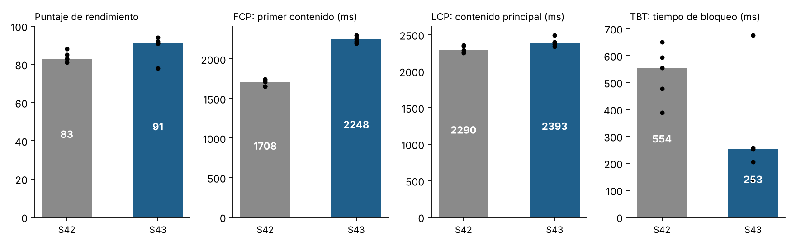
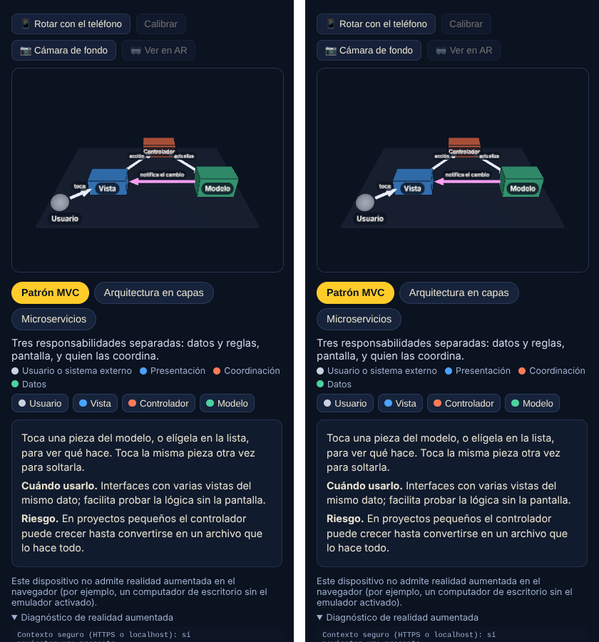

Hasta la Sesión 42 el Atlas era un solo archivo, main.ts, de 649 líneas. Para dibujar el catálogo, la función render() escribía todo el HTML como texto, y después buscaba cada botón con querySelectorAll para engancharle un oyente. Cada vez que algo cambiaba (marcar un favorito, guardar una nota) volvía a llamar a render() y empezaba otra vez desde cero. Funciona, pero tiene una consecuencia concreta que veremos en la sección 6.
Objetivos de aprendizaje
- ✓Reconocer qué problema resuelve React (mantener la pantalla sincronizada con los datos) y qué trabajo no le corresponde (dibujar con Three.js, WebXR, el Service Worker).
- ✓Preparar un proyecto Vite con React y TypeScript, y repartir una aplicación en componentes y hooks.
- ✓Cuidar la frontera entre React y código imperativo:
useEffectcon limpieza,useRefyuseSyncExternalStore. - ✓Registrar el Service Worker con el hook de
vite-plugin-pway comprobar que el manifest y el precaché siguen igual. - ✓Reutilizar las pruebas de las sesiones anteriores como red de seguridad de una migración, y escribir las que React hace necesarias.
- ✓Comparar la versión con y sin React con cifras reales (Lighthouse, peso y líneas de código) y leerlas con honestidad.
Recursos de esta sesión
- Descargar .zipCheckpoint — cierre de la Sesión 42. El Atlas 3D sin React, con Lighthouse resuelto. Es el punto de partida de hoy y la línea base de la comparación.
- Descargar .zipVersión terminada de esta sesión. El mismo Atlas en React:
App.tsx, siete hooks y seis componentes. Incluye el LEEME con las instrucciones. - Informe de Lighthouse (S42)Una de las cinco corridas de la versión sin React (la que coincide con la mediana de rendimiento).
- Informe de Lighthouse (S43)Una de las cinco corridas de la versión con React (la que coincide con la mediana de rendimiento).
1Qué hace React y qué no le toca hacer
React cambia la pregunta. En vez de «cuando pase X, modifica este elemento», se escribe «dado este estado, la pantalla se ve así», y React se encarga de calcular qué elementos hay que tocar. Eso es muy cómodo para listas, pestañas, textos que cambian y formularios. No lo es para un canvas de Three.js que se dibuja 60 veces por segundo, ni para una sesión de WebXR, ni para un Service Worker: ahí no hay «pantalla que describir», hay un objeto que se maneja con órdenes.
La regla de la sesión: lo que es pantalla pasa a React; lo que es motor se queda como estaba. Por eso
visor.ts, xr.ts, sw.ts, db.ts y los modelos como datos no cambiaron ni una línea. React los usa, no los reemplaza.
La estructura del Atlas en React. Los componentes (arriba) dibujan; los hooks (abajo) guardan la lógica; lo que está fuera de React (en rojo) es lo mismo de la Sesión 42.
2Preparar Vite para React
Son cuatro cambios de configuración. Se instalan react y react-dom (la versión 19), los tipos @types/react y @types/react-dom, y el plugin @vitejs/plugin-react. En tsconfig.json se activa "jsx": "react-jsx", que permite escribir etiquetas dentro del código TypeScript (archivos .tsx). index.html queda casi vacío: solo un <div id="root"> y el script de entrada.
El punto de entrada, main.tsx, pasó de 649 líneas a 12. Solo le dice a React dónde dibujar:
src/main.tsx (el punto de entrada)
createRoot(document.getElementById("root")!).render(
<StrictMode>
<App />
</StrictMode>
);Y vite.config.ts gana dos cosas: el plugin de React y un segundo paquete aparte. La Sesión 42 separó Three.js porque casi no cambia; React tiene la misma razón (y es el tercero del trío: tu código, Three.js y React). La opción manualChunks ahora es una función porque la lista simple dejaba a react-dom dentro del archivo de la app:
vite.config.ts (React en su propio paquete)
// Sesión 42: Three.js (la mayor parte del peso) va en su propio archivo: el código de la app
// cambia cada sesión, Three.js casi nunca, y así son dos descargas que se pueden cachear por separado.
// Sesión 43: React va en otro paquete aparte, por la misma razón.
manualChunks(id) {
if (id.includes("node_modules/three/build/")) return "three";
if (/node_modules\/(react|react-dom|scheduler)\//.test(id)) return "react";
},Un detalle fino: la regla de Three.js apunta a node_modules/three/build/ y no a toda la carpeta three. La primera versión usaba la carpeta entera y arrastró también los controles de órbita al paquete grande (501 kB, y el aviso de «más de 500 kB» volvió). Cuando una configuración mueve archivos, se mira el resultado de la compilación:
$ npm run build
> pwa-ar-objetos3d@0.0.0 build
> tsc && tsc -p tsconfig.sw.json && vite build
vite v5.4.21 building for production...
transforming...
✓ 70 modules transformed.
rendering chunks...
computing gzip size...
dist/index.html 0.93 kB │ gzip: 0.49 kB
dist/assets/index-C_Z4QQ-j.css 6.51 kB │ gzip: 1.83 kB
dist/assets/workbox-window.prod.es5-BqEJf4Xk.js 5.71 kB │ gzip: 2.34 kB
dist/assets/index-C65LVCWn.js 68.76 kB │ gzip: 22.38 kB
dist/assets/react-LTC9Rffj.js 221.71 kB │ gzip: 68.70 kB
dist/assets/three-DPr8S-9-.js 482.73 kB │ gzip: 122.01 kB
✓ built in 2.22s
PWA v1.3.0
Building src/sw.ts service worker ("es" format)...
vite v5.4.21 building for production...
transforming...
✓ 89 modules transformed.
rendering chunks...
computing gzip size...
dist/sw.mjs 27.66 kB │ gzip: 9.16 kB
✓ built in 276ms
PWA v1.3.0
mode injectManifest
format: es
precache 10 entries (778.17 KiB)
files generated
dist/sw.js
> pwa-ar-objetos3d@0.0.0 build
> tsc && tsc -p tsconfig.sw.json && vite build
vite v5.4.21 building for production...
transforming...
✓ 70 modules transformed.
rendering chunks...
computing gzip size...
dist/index.html 0.93 kB │ gzip: 0.49 kB
dist/assets/index-C_Z4QQ-j.css 6.51 kB │ gzip: 1.83 kB
dist/assets/workbox-window.prod.es5-BqEJf4Xk.js 5.71 kB │ gzip: 2.34 kB
dist/assets/index-C65LVCWn.js 68.76 kB │ gzip: 22.38 kB
dist/assets/react-LTC9Rffj.js 221.71 kB │ gzip: 68.70 kB
dist/assets/three-DPr8S-9-.js 482.73 kB │ gzip: 122.01 kB
✓ built in 2.22s
PWA v1.3.0
Building src/sw.ts service worker ("es" format)...
vite v5.4.21 building for production...
transforming...
✓ 89 modules transformed.
rendering chunks...
computing gzip size...
dist/sw.mjs 27.66 kB │ gzip: 9.16 kB
✓ built in 276ms
PWA v1.3.0
mode injectManifest
format: es
precache 10 entries (778.17 KiB)
files generated
dist/sw.js
Tres archivos de código: el de la app (68,76 kB), React (221,71 kB) y Three.js (482,73 kB). El precaché del Service Worker los registró solo: 10 entradas, 778,17 KiB (la Sesión 42 tenía 9 entradas y 558,82 KiB).
3De una función gigante a componentes y hooks
Un componente es una función que recibe datos (las props) y devuelve lo que se debe ver. Un hook es una función cuyo nombre empieza por use y que le da memoria o efectos a un componente. El reparto del Atlas fue este:
| Pieza | Qué guarda o dibuja | Dónde estaba en la S42 |
|---|---|---|
usePanel | Qué modelo y qué pieza están elegidos; la ficha ampliada | Tres variables sueltas y seis funciones que reescribían HTML |
useProgreso | Visitas, favoritos y notas (IndexedDB) | progresoPorId y los oyentes de render() |
useAR, useSensores, useCamara | Entrar y salir de AR; sensores; cámara de fondo | Funciones sueltas y variables globales |
useConexion, useInstalacion | Banda de «sin conexión»; botón y texto de instalación | Dos bloques de addEventListener |
ZonaVisor, PanelModelo | El visor, sus botones y el panel con pestañas, piezas y detalle | Parte de index.html más innerHTML |
Catalogo (Tarjeta) | Las tarjetas de modelos con favorito y nota | La función render() |
ZonaInstalar, ZonaDescargas, OverlayAR | Instalar; descargar para usar sin conexión; la capa de AR | index.html más oyentes |
App.tsx es el director: crea el visor, llama a los hooks y reparte lo que cada componente necesita. Mira cómo usePanel junta dos mundos: un manejador de eventos habla con el visor (imperativo: «muestra este modelo») y, en la misma función, actualiza el estado (declarativo: «el modelo elegido es este»).
src/hooks/usePanel.ts (imperativo y declarativo juntos)
const elegirModelo = useCallback(
(id: string) => {
const def = modeloPorId(id);
if (!def || !visor) return;
visor.mostrarModelo(def);
setModeloId(id);
setPiezaId(null);
},
[visor]
);Por qué se pasó a hooks y no solo a componentes. La lógica (qué pieza está elegida, cómo se recorre con ◀ ▶) no es pantalla. Un hook la deja en un lugar con nombre y se puede reutilizar:
ZonaVisor y OverlayAR comparten recorrerPiezas sin duplicar nada.4La frontera con Three.js: crear, y saber deshacer
El visor se crea una vez, cuando el div que lo contiene ya existe en la página. En React eso es un efecto. Pero hay una regla que en la Sesión 42 no existía: todo efecto que empieza algo tiene que saber deshacerlo. React, en desarrollo, usa StrictMode: monta cada componente, lo desmonta y lo vuelve a montar, a propósito, para que un efecto sin limpieza se note.
src/App.tsx (el visor dentro de un efecto)
const [visor, setVisor] = useState<Visor | null>(null);
const [aviso, setAviso] = useState("");
useEffect(() => {
const nuevo = crearVisor(contenedor.current!);
setVisor(nuevo);
return () => {
nuevo.destruir(); // la limpieza: sin ella, StrictMode dejaría dos lienzos
setVisor(null);
};
}, []);La línea importante es nuevo.destruir(). ¿Y si se olvida? No basta con creerlo: se probó. test_s43.js abre el proyecto en modo desarrollo (con StrictMode activo) y cuenta los canvas dentro del visor.
$ node test_s43.js
A1) desarrollo con StrictMode → lienzos en el visor: 1
A2) cambiar de modelo en desarrollo → piezas: 5 | errores de página: []
B1) escribir una nota y marcar favorito otra tarjeta → nota conservada: "repasar el controlador" | botón: ★ Favorito
RESULTADO: todo en orden
A1) desarrollo con StrictMode → lienzos en el visor: 1
A2) cambiar de modelo en desarrollo → piezas: 5 | errores de página: []
B1) escribir una nota y marcar favorito otra tarjeta → nota conservada: "repasar el controlador" | botón: ★ Favorito
RESULTADO: todo en orden
Y la prueba de la prueba, la misma idea de las sesiones 41 y 42: quitar la limpieza y ver que falla.
$ sed -i 's|^ nuevo.destruir();| // nuevo.destruir();|' src/App.tsx (se comenta la limpieza del visor)
$ node test_s43.js
A1) desarrollo con StrictMode → lienzos en el visor: 2
✗ FALLÓ: debe haber un solo lienzo (el efecto del visor debe limpiar lo que creó)
A2) cambiar de modelo en desarrollo → piezas: 5 | errores de página: []
B1) escribir una nota y marcar favorito otra tarjeta → nota conservada: "repasar el controlador" | botón: ★ Favorito
RESULTADO: hay 1 fallos
$ node test_s43.js
A1) desarrollo con StrictMode → lienzos en el visor: 2
✗ FALLÓ: debe haber un solo lienzo (el efecto del visor debe limpiar lo que creó)
A2) cambiar de modelo en desarrollo → piezas: 5 | errores de página: []
B1) escribir una nota y marcar favorito otra tarjeta → nota conservada: "repasar el controlador" | botón: ★ Favorito
RESULTADO: hay 1 fallos
Dos lienzos, uno sobre el otro. Sin
destruir(), el primer montaje de StrictMode dejó su canvas vivo y el segundo creó otro. En producción StrictMode no actúa y el defecto no se vería; sale en desarrollo, que es justo donde conviene que salga. La línea se restauró y la prueba volvió a pasar.5Estado que vive fuera de React: la instalación y el Service Worker
El evento beforeinstallprompt de la Sesión 41 se guarda en una variable de instalar.ts, que no es de React. Para que un componente se redibuje cuando esa variable cambia, React ofrece useSyncExternalStore: se le da una función para suscribirse a los cambios y otra que devuelve una foto del valor actual.
src/hooks/useInstalacion.ts (leer un valor externo)
// Declaradas fuera del hook para que su identidad no cambie entre dibujos.
const suscribir = (avisar: () => void) => iniciarInstalacion(avisar);
const foto = () => `${estadoInstalacion()}|${instalacionRechazada()}`;
export function useInstalacion() {
const [estado, rechazada] = useSyncExternalStore(suscribir, foto).split("|");
const texto =
estado === "instalada" ? TEXTO_INSTALACION.instalada
: estado === "recien-instalada" ? TEXTO_INSTALACION.recienInstalada
: estado === "instalable" ? TEXTO_INSTALACION.instalable
: estado === "ios" ? TEXTO_INSTALACION.ios
: rechazada === "true" ? TEXTO_INSTALACION.rechazada
: TEXTO_INSTALACION.noDisponible;
return { instalable: estado === "instalable", texto, pedir: pedirInstalacion };
}Dos detalles. Las funciones suscribir y foto se declaran fuera del hook: si se crearan dentro, tendrían identidad nueva en cada dibujo y React se resuscribiría sin parar. Y la foto es un texto ("estado|rechazada"), no un objeto: React compara fotos con Object.is, y dos objetos iguales no son «el mismo».
La suscripción exigió un pequeño cambio en instalar.ts, el único archivo «de motor» que se tocó: iniciarInstalacion ahora devuelve cómo dejar de escuchar. Antes los oyentes se registraban una vez para toda la vida de la página; con StrictMode pueden registrarse dos veces.
src/instalar.ts (la limpieza)
// Sesión 43: en React todo efecto que empieza algo debe saber deshacerlo.
return () => {
window.removeEventListener("beforeinstallprompt", alOfrecer);
window.removeEventListener("appinstalled", alInstalar);
modo.removeEventListener("change", alCambiarModo);
avisar = () => {};
};El Service Worker también cambió de quien lo registra, no de lo que hace. vite-plugin-pwa trae un hook, useRegisterSW, que lo registra y entrega como estado si la app ya está lista para usarse sin conexión. El archivo sw.ts (el que se escribió en la Sesión 37) es el mismo:
src/App.tsx (registrar el Service Worker)
const { offlineReady } = useRegisterSW({
immediate: true,
onOfflineReady() {
// El usuario está mirando la pantalla: la notificación solo si NO la está mirando.
if (document.visibilityState !== "visible") {
void mostrarAviso("Atlas 3D listo", "Ya funciona sin conexión.", import.meta.env.BASE_URL, "atlas-offline");
}
},
onRegisterError(error) {
console.error("Error al registrar el SW de Workbox:", error);
},
});Una advertencia que React nos regala. El oyente de
beforeinstallprompt se registra en un efecto, es decir, después del primer dibujo. Si Chrome disparara el evento antes, la app no lo vería. En la práctica el evento llega después de que la página cargó, y por eso las pruebas pasan; pero es una carrera que en la Sesión 41 no existía, porque el oyente estaba en el cuerpo del script. Es un buen candidato para la actividad 4.6Dos casos de frontera: lo que React no conoce y lo que React arregla
La capa de AR: un elemento que no se puede reemplazar
WebXR pide un elemento HTML como «dom-overlay» (lo que se ve encima de la cámara). Debe existir antes de pedir la sesión y no cambiarse mientras dure. Con React eso se resuelve montando OverlayAR una vez, con una ref, y cambiando solo su texto. Además, el botón «Salir» y las flechas no deben contar como «tocar para colocar el modelo»: el navegador avisa con el evento beforexrselect y basta cancelarlo. React no tiene una propiedad para ese evento, así que se enlaza a mano:
src/componentes/OverlayAR.tsx (un evento que React no conoce)
// Un toque sobre un botón del overlay NO debe contar como «tocar para colocar»: el navegador avisa
// con `beforexrselect` y basta cancelarlo. React no conoce ese evento, así que se enlaza a mano.
useEffect(() => {
const botones = [salir.current, ant.current, sig.current].filter((b): b is HTMLButtonElement => b !== null);
const cancelar = (e: Event) => e.preventDefault();
botones.forEach((b) => b.addEventListener("beforexrselect", cancelar));
return () => botones.forEach((b) => b.removeEventListener("beforexrselect", cancelar));
}, []);Las notas: un defecto de la Sesión 42 que React elimina
Esta es la ganancia más concreta de la migración, y apareció al escribir las pruebas. En la Sesión 42, render() reescribía todo el catálogo cada vez que algo cambiaba. Si escribías una nota en una tarjeta y, antes de guardarla, marcabas favorito en otra, el HTML se rehacía y tu nota desaparecía.
src/main.ts de la Sesión 42 (el favorito rehace todo)
appEl.querySelectorAll<HTMLButtonElement>(".btn-favorito").forEach((btn) =>
btn.addEventListener("click", async () => {
const id = btn.dataset.id!;
await alternarFavorito(db, id);
const todo = await obtenerTodoElProgreso(db);
progresoPorId = new Map(todo.map((p) => [p.modeloId, p]));
render();
})
);En React el campo es controlado: su contenido es un estado (value={nota}) y cada tarjeta guarda el suyo. Cuando cambia el favorito, React solo actualiza la estrella; el campo ni se toca.
src/componentes/Catalogo.tsx (un campo controlado)
<input type="text" className="nota-input" placeholder="Nota de estudio..." value={nota} onChange={(e) => setNota(e.target.value)} />La prueba (B1 de test_s43.js) escribe una nota en una tarjeta, marca favorito en otra y mira si la nota sigue ahí. Se ejecutó también contra la compilación de la Sesión 42, para comprobar que sí detecta el defecto:
$ SOLO_B=1 DIR=s42 node test_s43.js
B1) escribir una nota y marcar favorito otra tarjeta → nota conservada: "" | botón: ★ Favorito
✗ FALLÓ: la nota escrita no debe borrarse
RESULTADO: hay 1 fallos
B1) escribir una nota y marcar favorito otra tarjeta → nota conservada: "" | botón: ★ Favorito
✗ FALLÓ: la nota escrita no debe borrarse
RESULTADO: hay 1 fallos
7Las pruebas de siempre, sin tocar
Aquí se ve el valor de haber escrito pruebas en las sesiones anteriores. Todas se ejecutaron contra la compilación nueva, sin cambiar una sola línea de su lógica, porque el HTML conserva los mismos id y las mismas clases. Si la migración hubiera roto algo, una de ellas lo habría dicho.
$ S42DIR=s43 node test_s42.js
1) documento → {"lang":"es","viewport":"width=device-width, initial-scale=1.0","descr":140,"tema":"#0b1220","main":1,"h1":1,"contextoSeguro":true,"titulo":"Atlas 3D de Arquitectura de Software"}
2) manifest → errores de Chrome: [] | name: Atlas 3D de Arquitectura de Software | display: standalone | start_url: ./ | iconos: ["192x192","512x512","512x512/maskable"]
3) Chrome dice: errores de instalabilidad → []
4) service worker → {"activo":true,"controla":true,"precache":10}
5) servidor caído y recarga → {"canvas":1,"pestanas":3}
6) desplazamiento de diseño acumulado (CLS) al cargar → 0.008
7) escena quieta durante 1,5 s → llamadas de dibujo: 0
8) arrastrar para girar → llamadas de dibujo nuevas: sí (720)
9) tras soltar y pasar la inercia → vuelve a quedarse quieta: sí
10) elegir una pieza → llamadas de dibujo nuevas: sí
11) cambiar de modelo → llamadas de dibujo nuevas: sí
12) cambiar el tamaño de la ventana → llamadas de dibujo nuevas: sí
pageerrors: []
RESULTADO: todo en orden
1) documento → {"lang":"es","viewport":"width=device-width, initial-scale=1.0","descr":140,"tema":"#0b1220","main":1,"h1":1,"contextoSeguro":true,"titulo":"Atlas 3D de Arquitectura de Software"}
2) manifest → errores de Chrome: [] | name: Atlas 3D de Arquitectura de Software | display: standalone | start_url: ./ | iconos: ["192x192","512x512","512x512/maskable"]
3) Chrome dice: errores de instalabilidad → []
4) service worker → {"activo":true,"controla":true,"precache":10}
5) servidor caído y recarga → {"canvas":1,"pestanas":3}
6) desplazamiento de diseño acumulado (CLS) al cargar → 0.008
7) escena quieta durante 1,5 s → llamadas de dibujo: 0
8) arrastrar para girar → llamadas de dibujo nuevas: sí (720)
9) tras soltar y pasar la inercia → vuelve a quedarse quieta: sí
10) elegir una pieza → llamadas de dibujo nuevas: sí
11) cambiar de modelo → llamadas de dibujo nuevas: sí
12) cambiar el tamaño de la ventana → llamadas de dibujo nuevas: sí
pageerrors: []
RESULTADO: todo en orden
Lo que esto confirma: el manifest y la instalabilidad según Chrome siguen sin errores (2 y 3); el Service Worker controla la página con 10 entradas de precaché (4); sin servidor, el visor se monta con una sola capa de dibujo y 3 pestañas (5); el CLS medido por la prueba es 0,008 (6); y el dibujo bajo demanda de la Sesión 42 se conserva: una escena quieta no dibuja (7) y cada acción sí (8 a 12).
$ S41DIR=s43 node test_s41.js | tail -14
B1) llega beforeinstallprompt → defaultPrevented: true | botón visible: true | texto: Puedes instalarla: se abre a pantalla completa, desde su icono, y funciona sin conexión.
C1) clic en «Instalar» → prompt() llamado 1 vez | botón visible: false
C2) llega appinstalled → texto: ✓ Instalada. Ábrela desde su icono en la pantalla de inicio.
D1) usuario cancela → botón visible: false | texto: Cancelaste la instalación. Chrome decide cuándo volver a ofrecerla; mientras tanto, usa el menú ⋮ → «Instalar app».
D2) Chrome vuelve a ofrecer la instalación → botón visible: true
E1) modo standalone → botón visible: false | texto: ✓ Estás usando Atlas 3D como app instalada.
F1) iPhone → botón visible: false | texto: En iPhone y iPad no hay botón: en Safari toca Compartir y luego «Añadir a pantalla de inicio».
G1) en línea → banda: null
G2) se corta la red → banda: Sin conexión: los modelos y las fichas descargadas siguen disponibles.
G3) sin red se cambia de modelo → «Niveles apilados: cada capa solo habla con la inme…»
G4) vuelve la red → banda: Volvió la conexión.
G5) 3,3 s después → banda: null
pageerrors: []
RESULTADO: todo en orden
B1) llega beforeinstallprompt → defaultPrevented: true | botón visible: true | texto: Puedes instalarla: se abre a pantalla completa, desde su icono, y funciona sin conexión.
C1) clic en «Instalar» → prompt() llamado 1 vez | botón visible: false
C2) llega appinstalled → texto: ✓ Instalada. Ábrela desde su icono en la pantalla de inicio.
D1) usuario cancela → botón visible: false | texto: Cancelaste la instalación. Chrome decide cuándo volver a ofrecerla; mientras tanto, usa el menú ⋮ → «Instalar app».
D2) Chrome vuelve a ofrecer la instalación → botón visible: true
E1) modo standalone → botón visible: false | texto: ✓ Estás usando Atlas 3D como app instalada.
F1) iPhone → botón visible: false | texto: En iPhone y iPad no hay botón: en Safari toca Compartir y luego «Añadir a pantalla de inicio».
G1) en línea → banda: null
G2) se corta la red → banda: Sin conexión: los modelos y las fichas descargadas siguen disponibles.
G3) sin red se cambia de modelo → «Niveles apilados: cada capa solo habla con la inme…»
G4) vuelve la red → banda: Volvió la conexión.
G5) 3,3 s después → banda: null
pageerrors: []
RESULTADO: todo en orden
$ S40DIR=s43 node test_s40.js | tail -8
I1) base v2 preparada con identificadores de la demo
I2) tras abrir la app → {"version":3,"progreso":[["microservicios",false,333],["mvc",true,111]],"descargas":[["capas","pendiente"],["mvc","pendiente"]]}
J1) antes de usar AR → rastro: null
J2) dentro de AR → rastro: activa | diagnóstico: Última sesión de AR: sin registro.
J3) tras salir → rastro: fin-ok
J4) diagnóstico → Última sesión de AR: terminó completa (hace 1 s).
J5) rastro interrumpido simulado, tras recargar → Última sesión de AR: se interrumpió en el paso «fin-3-ancla» (hace 4 s). | panel abierto: true
pageerrors: []
I1) base v2 preparada con identificadores de la demo
I2) tras abrir la app → {"version":3,"progreso":[["microservicios",false,333],["mvc",true,111]],"descargas":[["capas","pendiente"],["mvc","pendiente"]]}
J1) antes de usar AR → rastro: null
J2) dentro de AR → rastro: activa | diagnóstico: Última sesión de AR: sin registro.
J3) tras salir → rastro: fin-ok
J4) diagnóstico → Última sesión de AR: terminó completa (hace 1 s).
J5) rastro interrumpido simulado, tras recargar → Última sesión de AR: se interrumpió en el paso «fin-3-ancla» (hace 4 s). | panel abierto: true
pageerrors: []
$ S39DIR=s43 node test_s39.js | tail -8
G2) tras tocar (de pie en x=1, mirando al frente) → {hitTest:no,anclas:sí,anclado:no,fase:colocado,escala:0.25,giro:0,pos:[1,-0.3,-1.48]}
G3) los gestos también funcionan sin hit-test → escala: 0.5
H1) sin «anchors» → Sesión de realidad aumentada activa. El navegador no concedió: dom-overlay, anchors.
H2) tocar → {hitTest:sí,anclas:no,anclado:no,fase:colocado,escala:0.25,giro:0,pos:[0,-1.4,-2.34]} | anclas creadas: {"crearAncla":0,"borrarAncla":0}
I1) createAnchor rechazado → {hitTest:sí,anclas:sí,anclado:no,fase:colocado,escala:0.25,giro:0,pos:[0,-1.4,-2.34]}
J1) intentos de petición → ["[\"local\",\"hit-test\"]","[\"local\"]"] | estado: Sesión de realidad aumentada activa. El navegador no concedió: dom-overlay.
J2) tocar tras el reintento → {hitTest:sí,anclas:sí,anclado:sí,fase:colocado,escala:0.25,giro:0,pos:[0,-1.4,-2.34]}
pageerrors: []
G2) tras tocar (de pie en x=1, mirando al frente) → {hitTest:no,anclas:sí,anclado:no,fase:colocado,escala:0.25,giro:0,pos:[1,-0.3,-1.48]}
G3) los gestos también funcionan sin hit-test → escala: 0.5
H1) sin «anchors» → Sesión de realidad aumentada activa. El navegador no concedió: dom-overlay, anchors.
H2) tocar → {hitTest:sí,anclas:no,anclado:no,fase:colocado,escala:0.25,giro:0,pos:[0,-1.4,-2.34]} | anclas creadas: {"crearAncla":0,"borrarAncla":0}
I1) createAnchor rechazado → {hitTest:sí,anclas:sí,anclado:no,fase:colocado,escala:0.25,giro:0,pos:[0,-1.4,-2.34]}
J1) intentos de petición → ["[\"local\",\"hit-test\"]","[\"local\"]"] | estado: Sesión de realidad aumentada activa. El navegador no concedió: dom-overlay.
J2) tocar tras el reintento → {hitTest:sí,anclas:sí,anclado:sí,fase:colocado,escala:0.25,giro:0,pos:[0,-1.4,-2.34]}
pageerrors: []
Y los recursos de la GPU al dar ocho vueltas entre modelos (los números vuelven a los mismos valores cada tres modelos, es decir, el visor se limpia bien), y la publicación en una subruta, como en GitHub Pages:
inicio {"Texture":16,"Framebuffer":3,"Buffer":57,"Program":5,"Shader":0,"VertexArray":17}
ciclo 0 mvc {"Texture":16,"Framebuffer":3,"Buffer":59,"Program":6,"Shader":0,"VertexArray":18}
ciclo 1 capas {"Texture":19,"Framebuffer":3,"Buffer":79,"Program":6,"Shader":0,"VertexArray":23}
ciclo 2 microservicios {"Texture":19,"Framebuffer":3,"Buffer":121,"Program":6,"Shader":0,"VertexArray":35}
ciclo 3 mvc {"Texture":16,"Framebuffer":3,"Buffer":59,"Program":6,"Shader":0,"VertexArray":18}
ciclo 4 capas {"Texture":19,"Framebuffer":3,"Buffer":79,"Program":6,"Shader":0,"VertexArray":23}
ciclo 5 microservicios {"Texture":19,"Framebuffer":3,"Buffer":121,"Program":6,"Shader":0,"VertexArray":35}
ciclo 6 mvc {"Texture":16,"Framebuffer":3,"Buffer":59,"Program":6,"Shader":0,"VertexArray":18}
ciclo 7 capas {"Texture":19,"Framebuffer":3,"Buffer":79,"Program":6,"Shader":0,"VertexArray":23}
errores []
ciclo 0 mvc {"Texture":16,"Framebuffer":3,"Buffer":59,"Program":6,"Shader":0,"VertexArray":18}
ciclo 1 capas {"Texture":19,"Framebuffer":3,"Buffer":79,"Program":6,"Shader":0,"VertexArray":23}
ciclo 2 microservicios {"Texture":19,"Framebuffer":3,"Buffer":121,"Program":6,"Shader":0,"VertexArray":35}
ciclo 3 mvc {"Texture":16,"Framebuffer":3,"Buffer":59,"Program":6,"Shader":0,"VertexArray":18}
ciclo 4 capas {"Texture":19,"Framebuffer":3,"Buffer":79,"Program":6,"Shader":0,"VertexArray":23}
ciclo 5 microservicios {"Texture":19,"Framebuffer":3,"Buffer":121,"Program":6,"Shader":0,"VertexArray":35}
ciclo 6 mvc {"Texture":16,"Framebuffer":3,"Buffer":59,"Program":6,"Shader":0,"VertexArray":18}
ciclo 7 capas {"Texture":19,"Framebuffer":3,"Buffer":79,"Program":6,"Shader":0,"VertexArray":23}
errores []
$ npm run build -- --base=/atlas-3d/ --outDir /tmp/dist-sub
$ node test_subruta.js
subruta → {"scope":"http://localhost:4195/atlas-3d/","activo":true,"manifest":{"start":"./","scope":"./"},"iconoStatus":200,"caches":["modelos-3d","workbox-precache-v2-http://localhost:4195/atlas-3d/"]}
recarga sin conexión: canvas montado = 1
ficha → ["http://localhost:4195/atlas-3d/modelos/mvc.json",200]
descarga desde el botón → caché modelos-3d: ["http://localhost:4195/atlas-3d/modelos/capas.json","http://localhost:4195/atlas-3d/modelos/microservicios.json","http://localhost:4195/atlas-3d/modelos/mvc.json"]
peticiones fuera de la subruta o 404: [] | pageerrors: []
$ node test_subruta.js
subruta → {"scope":"http://localhost:4195/atlas-3d/","activo":true,"manifest":{"start":"./","scope":"./"},"iconoStatus":200,"caches":["modelos-3d","workbox-precache-v2-http://localhost:4195/atlas-3d/"]}
recarga sin conexión: canvas montado = 1
ficha → ["http://localhost:4195/atlas-3d/modelos/mvc.json",200]
descarga desde el botón → caché modelos-3d: ["http://localhost:4195/atlas-3d/modelos/capas.json","http://localhost:4195/atlas-3d/modelos/microservicios.json","http://localhost:4195/atlas-3d/modelos/mvc.json"]
peticiones fuera de la subruta o 404: [] | pageerrors: []
Una lección sobre las propias pruebas. Al ejecutar las pruebas de AR (las que simulan un teléfono con el emulador IWER), fallaron con
Converting circular structure to JSON. No era la app: React guarda dentro de cada elemento que dibuja unas propiedades internas (__reactFiber$…) que apuntan a su árbol, y el envoltorio de la prueba intentaba convertir a texto el elemento del overlay. Se corrigió en la prueba (un reemplazo que escribe <xr-overlay> en lugar del elemento), no en la app. Moraleja: cuando una migración rompe una prueba, hay que preguntarse primero qué está fallando, la app o el instrumento.8La comparación, con las cifras a la vista
Para comparar dos versiones hay que medirlas igual. Se usó el método de la Sesión 42: Lighthouse 13.6.0, móvil, lentitud simulada, cinco corridas por versión y la mediana. Esta vez son cinco corridas y no tres (como en la Sesión 42) porque la versión con React mostró mucha dispersión: sus cinco corridas dieron rendimiento 78, 91, 92, 94 y 91, mientras las de la versión sin React dieron 85, 83, 81, 88 y 83.
| Medida (mediana de 5) | Sin React (S42) | Con React (S43) |
|---|---|---|
| Rendimiento | 83 | 91 |
| Accesibilidad / buenas prácticas / SEO | 100 / 100 / 100 | 100 / 100 / 100 |
| FCP (primer contenido) | 1708 ms | 2248 ms |
| LCP (contenido más grande) | 2290 ms | 2393 ms |
| TBT (tiempo de bloqueo) | 554 ms | 253 ms |
| CLS (desplazamiento de diseño) | 0,05 | 0 |
| Precaché del Service Worker | 9 archivos · 558,82 KiB | 10 archivos · 778,17 KiB |
| JavaScript de la app + React (sin comprimir) | 62,57 kB | 68,76 + 221,71 kB |
| Líneas de código de la interfaz | 722 (main.ts 649 + index.html 73) | 978 (17 archivos) |
| Pruebas anteriores que pasan sin cambios | — | S39 a S42 (con un arreglo en el instrumento) |
| Defecto «nota borrada al cambiar un favorito» | Presente | Resuelto |

Las cinco corridas de cada versión. La dispersión de React es visible: una corrida (78) queda lejos de las otras cuatro.
Cómo leer estas cifras
- El puntaje subió, y el primer contenido bajó. Con React el HTML llega casi vacío (un solo
div) y no hay nada que ver hasta que se descarga y ejecuta el JavaScript. Por eso el FCP pasó de 1,7 a 2,25 s: es el costo de dibujar en el navegador en lugar de entregar el HTML ya escrito. La alternativa (generar el HTML antes, en la compilación o en un servidor) existe y no se aplicó hoy. - El TBT bajó, pero no se puede atribuir solo a React. Lighthouse cuenta el bloqueo entre el primer contenido y el momento en que la página es interactiva; si el primer contenido llega más tarde, parte del trabajo del hilo principal puede quedar fuera de esa ventana. Es una explicación plausible, no probada: no se aisló.
- El CLS pasó de 0,05 a 0. El panel y el visor ahora nacen dentro del árbol de React con su espacio reservado.
- El JavaScript propio más React pesa más de cuatro veces lo de antes (62,57 kB frente a 290,47 kB sin comprimir, sin contar Three.js; React solo son 68,70 kB comprimido) y el precaché total crece un 39 %. Para este Atlas no hay beneficio de tamaño: el beneficio está en cómo queda el código.
- Más líneas no es peor ni mejor. 978 líneas en 17 archivos pequeños, con lógica que se puede probar y reutilizar, frente a 722 en un archivo grande. Parte del aumento es que el HTML que antes eran textos largos ahora es JSX con sus
import. - La variación existe. Cinco corridas de la misma versión de React van de 78 a 94. Una sola medición de Lighthouse no decide nada.
Estas cifras no son las de tu teléfono. Las corridas se hicieron en un Chromium sin tarjeta gráfica y con lentitud simulada. Sirven para comparar las dos versiones en las mismas condiciones. En la sección siguiente las repites tú, en tu equipo.

La misma pantalla, a 412 px de ancho: izquierda, Sesión 42; derecha, Sesión 43. Migrar no debe cambiar lo que ve el usuario, y aquí no cambió.
¿Entonces conviene React para esta app? Es una decisión que depende de qué se valore. Para un visor que apenas tiene pantalla, el costo en peso y primer contenido es real. Para una interfaz que va a crecer (más fichas, más estados, más formularios), el orden y las pruebas que dan los componentes pesan más. La Sesión 45 retoma esta pregunta con las tres versiones del Atlas puestas lado a lado.
9Pruébalo tú
- Actualiza el repositorio. Descomprime
pwa-ar-objetos3d-sesion43.zipy copia su contenido sobre tu carpeta del proyecto, reemplazando archivos (ahora haysrc/App.tsxy las carpetashooksycomponentes;src/main.tsya no existe y debes borrarlo). Conserva.github/workflows/pages.yml. Ejecutanpm install, porque hay dependencias nuevas. - Pruébalo en tu computador:
npm run devabre el modo desarrollo (con StrictMode);npm run buildynpm run previewabren la versión de producción. Cambia entre modelos y mira que sigue habiendo un solo visor. - Súbelo:
git add .,git commitygit push. Si el push se rechaza,git pull --no-rebase -X ours --no-edity vuelve a empujar. Espera la marca verde en Actions. - En tu teléfono, recarga dos veces la app y comprueba que sigue todo: (a) el modelo gira con el dedo y se queda quieto al soltar; (b) elegir pieza y cambiar de modelo funciona; (c) «Ver en AR» entra y sale; (d) la rotación con el teléfono; (e) el botón «Instalar» y el texto de estado; (f) con el modo avión, la app abre y muestra el visor.
- Mide tú, con Lighthouse en una ventana de incógnito (F12 → Lighthouse → «Móvil»): tres corridas de la versión de la Sesión 42 y tres de la de hoy, y anota la mediana de rendimiento, FCP, TBT y CLS. Tus números serán otros; lo que importa es si la dirección coincide.
Lo más útil que puedes aportar: tus tres medianas por versión, y si algo cambió de aspecto o de comportamiento en el teléfono.
10Actividades
1
Mide las dos versiones en tu equipo
Publica o sirve localmente la versión de la Sesión 42 y la de hoy. Corre Lighthouse tres veces en cada una (incógnito, móvil) y arma la tabla de medianas: rendimiento, FCP, LCP, TBT y CLS. Compara con la tabla de la sección 8.
Entregable: tus dos tablas y un párrafo que diga qué coincide con lo medido en la guía y qué no.
2
Rompe la limpieza del visor
Comenten la línea nuevo.destruir(); de App.tsx, ejecuten npm run dev y abran la página. Cuenten los canvas en el elemento #visor desde las herramientas de desarrollo (pestaña Elementos). Restauren la línea y repitan.
Para pensar: ¿por qué el defecto aparece en desarrollo y no en la versión compilada?
Entregable: el número de lienzos con y sin la línea, y la respuesta a la pregunta.
3
Un componente nuevo: el contador de visitas
Añade a cada Tarjeta un texto «Visitado N veces» que cuente cuántas veces se pulsó «Marcar como visto». Piensa antes: ¿el contador es estado del componente o ya existe en useProgreso? Implementa lo que te parezca más simple y explica por qué.
Entregable: el código cambiado y una frase que justifique dónde vive el dato.
4
La carrera del evento de instalación
Mueve el addEventListener("beforeinstallprompt") de instalar.ts para que se ejecute al cargar el módulo (antes de que React dibuje) y guarde el evento en la variable. ¿Qué parte de useInstalacion debe cambiar para que el botón aparezca aunque el evento haya llegado antes? ¿Qué prueba de la sesión 41 te avisaría si te equivocas?
Entregable: el cambio, y la salida de test_s41.js antes y después.
Cierre: actualiza tu repositorio
Terminal
npm install
git add .
git commit -m "Atlas 3D en React: componentes, hooks y useRegisterSW"
git pushResumen de la sesión
- React mantiene la pantalla sincronizada con el estado: se describe cómo se ve, no cómo se modifica. Es ideal para catálogos, pestañas y formularios.
- Lo que es un motor (Three.js, WebXR, Service Worker, IndexedDB) se queda fuera de React:
visor.ts,xr.ts,sw.tsydb.tsno cambiaron. - En la frontera, todo efecto que empieza algo debe saber deshacerlo (
nuevo.destruir()). StrictMode lo comprueba en desarrollo, y la prueba falla sin la limpieza. useRefpara llegar a un elemento,useSyncExternalStorepara leer un valor externo yuseRegisterSWpara registrar el Service Worker.- Los campos controlados acabaron con un defecto real de la Sesión 42: la nota que se borraba al cambiar otra tarjeta.
- Las pruebas de las sesiones 39 a 42 pasaron sin cambiar su lógica: son la red de seguridad de una migración.
- Medido: rendimiento 83 → 91 y CLS 0, pero con peor primer contenido (1,7 → 2,25 s), JavaScript propio más de cuatro veces mayor y 256 líneas más. Ninguna versión «gana» en todo.
Próxima sesión
Sesión 44: el Atlas 3D en Angular. El mismo proyecto con otro framework, para ver qué cambia en la forma de pensar (plantillas, servicios, inyección de dependencias) y qué se mantiene.
Referencias
[1] React, "Learn React" y "You Might Not Need an Effect", react.dev/learn.
[2] React, "useSyncExternalStore" y "StrictMode", react.dev/reference/react.
[3] Vite, "Plugin React" (
@vitejs/plugin-react) y "Building for Production", vite.dev.[4] vite-plugin-pwa, "Frameworks → React" (
useRegisterSW), vite-pwa-org.netlify.app/frameworks/react.[5] web.dev, "First Contentful Paint (FCP)", "Total Blocking Time (TBT)" y "Rendering on the Web", web.dev/articles.
[6] W3C, "WebXR DOM Overlays Module" (el evento
beforexrselect), w3.org/TR/webxr-dom-overlays-1.